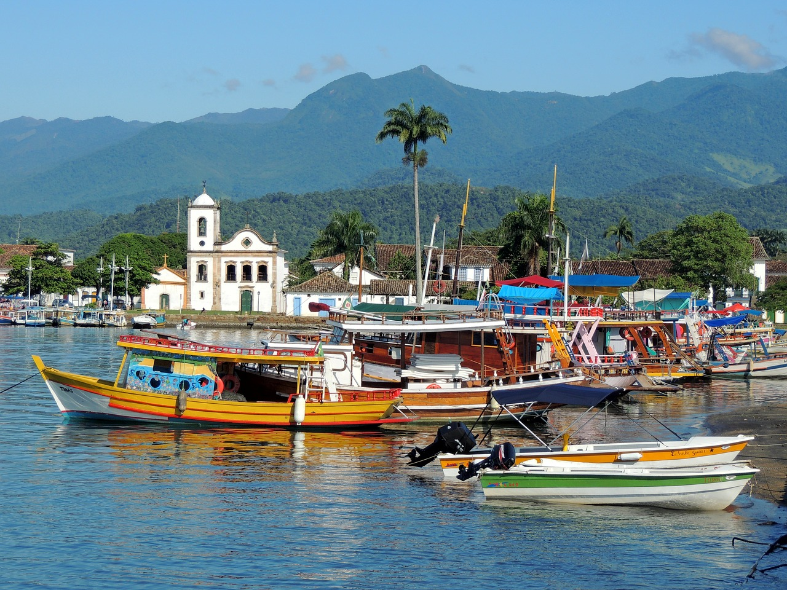
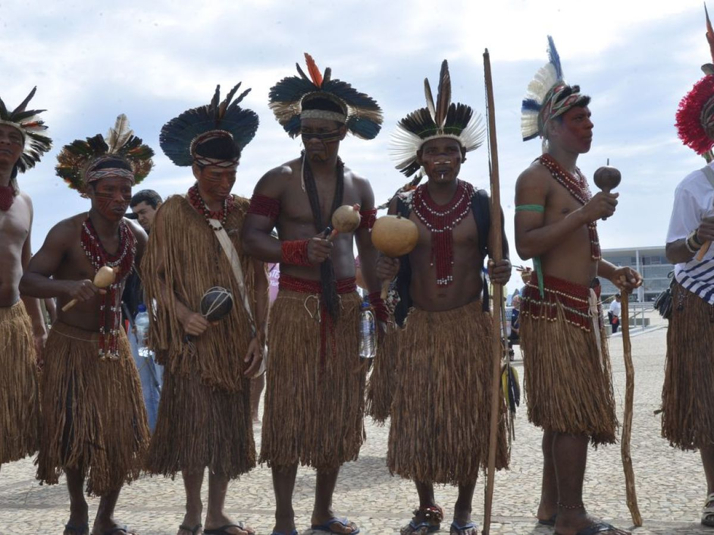
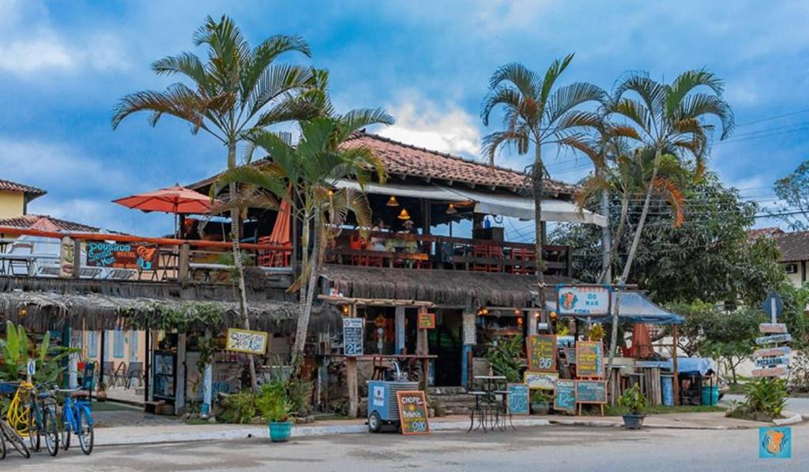
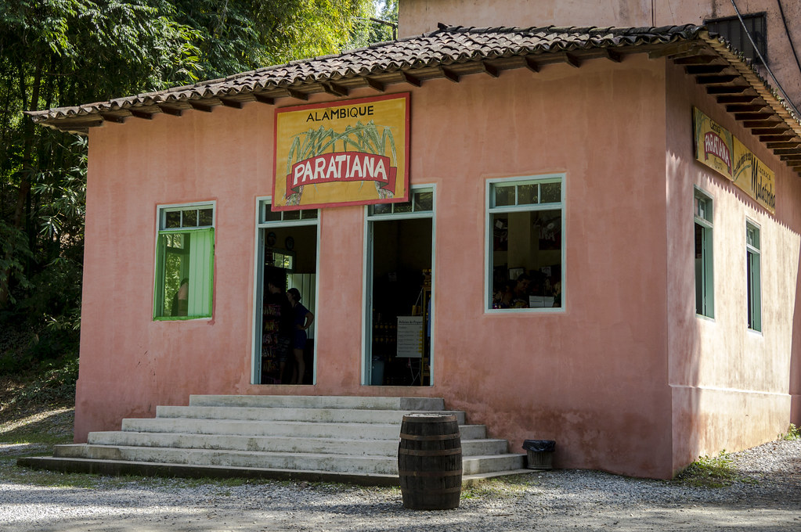
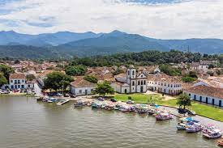
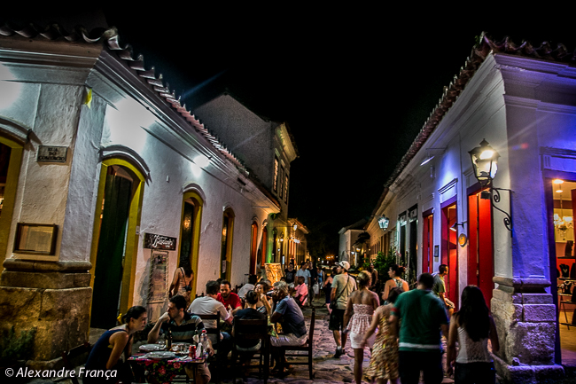
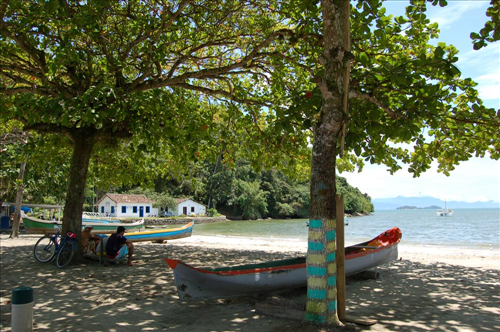
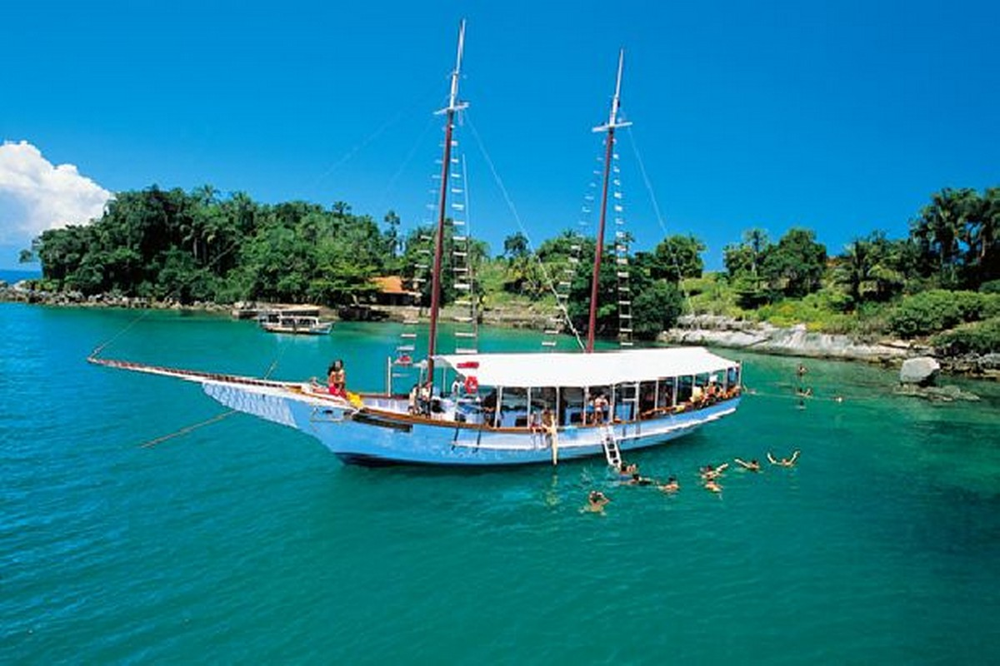

<!DOCTYPE html>
<html lang="pt-br">

<head>
    <!-- Meta tags Obrigatórias -->
    <meta charset="utf-8">
    <meta name="viewport" content="width=device-width, initial-scale=1, shrink-to-fit=no">

    <!-- Bootstrap CSS -->
    <link rel="stylesheet" href="https://stackpath.bootstrapcdn.com/bootstrap/4.1.3/css/bootstrap.min.css"
        integrity="sha384-MCw98/SFnGE8fJT3GXwEOngsV7Zt27NXFoaoApmYm81iuXoPkFOJwJ8ERdknLPMO" crossorigin="anonymous">

    <title>Olá, mundo!</title>
   
    <style>
        .tm-social {
            width: 50px;
            height: 50px;
        }
    </style>

<script src="assets/css/style.css"></script>
<link rel="stylesheet" href="assets/css/style.css">
    
</head>


<body class="bg-light">
    <!--Navbar-->
<!-- Imagem e texto -->
<nav class="navbar navbar-light bg-warning">
    <a class="navbar-brand" href="#">
      
      Paraty-RJ
    </a>
  </nav>

    <nav class="navbar navbar-expand-lg navbar-light bg-warning">
        <a class="navbar-brand" href="#"><strong>Bem Vindo</strong></a>
        <button class="navbar-toggler" type="button" data-toggle="collapse" data-target="#conteudoNavbarSuportado"
            aria-controls="conteudoNavbarSuportado" aria-expanded="false" aria-label="Alterna navegação">
            <span class="navbar-toggler-icon"></span>
        </button>

        <div class="collapse navbar-collapse" id="conteudoNavbarSuportado">
            <ul class="navbar-nav mr-auto">
                <li class="nav-item active">
                    <a class="nav-link" href="#historia">Historia <span class="sr-only">(página atual)</span></a>
                </li>
                <li class="nav-item">
                    <a class="nav-link" href="#turismo">Turismo</a>
                </li>
                <li class="nav-item dropdown">
                    <a class="nav-link dropdown-toggle" href="#" id="navbarDropdown" role="button"
                        data-toggle="dropdown" aria-haspopup="true" aria-expanded="false">
                        Hospedagem
                    </a>
                    <div class="dropdown-menu" aria-labelledby="navbarDropdown">
                        <a class="dropdown-item" href="#">Hoteis</a>
                        <a class="dropdown-item" href="#">pousadas e hóstels</a>
                        <div class="dropdown-divider"></div>
                        <a class="dropdown-item" href="#">Campings</a>
                    </div>
                </li>
                <li class="nav-item">
                    <a class="nav-link " href="#curiosidades">Curiosidades</a>
                </li>
            </ul>
            <form class="form-inline my-2 my-lg-0">
                <input class="form-control mr-sm-2" type="search" placeholder="Pesquisar" aria-label="Pesquisar">
                <button class="btn btn-outline-success my-2 my-sm-0" type="submit">Pesquisar</button>
            </form>
        </div>
    </nav>
    <!--/Navbar-->

    <!--carousel-->
    <div id="carouselExampleIndicators" class="carousel slide" data-ride="carousel">
        <ol class="carousel-indicators">
            <li data-target="#carouselExampleIndicators" data-slide-to="0" class="active"></li>
            <li data-target="#carouselExampleIndicators" data-slide-to="1"></li>
            <li data-target="#carouselExampleIndicators" data-slide-to="2"></li>
        </ol>
        <div class="carousel-inner">
            <div class="carousel-item active">
                
            </div>
            <div class="carousel-item">
                
            </div>
            <div class="carousel-item">
                
            </div>
        </div>
        <a class="carousel-control-prev" href="#carouselExampleIndicators" role="button" data-slide="prev">
            <span class="carousel-control-prev-icon" aria-hidden="true"></span>
            <span class="sr-only">Anterior</span>
        </a>
        <a class="carousel-control-next" href="#carouselExampleIndicators" role="button" data-slide="next">
            <span class="carousel-control-next-icon" aria-hidden="true"></span>
            <span class="sr-only">Próximo</span>
        </a>
    </div>
    <!--carousel-->

    <!--jumbotron-->
    <div class="jumbotron jumbotron-fluid bg-warning">
        <div class="container">
            <h1 class="display-4">Apresentação</h1>
            <p class="lead"><strong> Veja uma pequena parte da historia que até hoje é mantida.</strong></p>
        </div>
    </div>
    <!--/jumbotron-->

    <!--cards-->

    <div class="container">
        <div class="card-columns">
            <div class="card">
                
                <div class="card-body">
                    <h5 class="card-title">Ainda hoje se tem indios que habitam a região!</h5>
                    <p class="card-text">A presença Guarani em terras paratienses reconta a tempos muito antigos onde o
                        mito da "Terra sem Mal" os trouxe para o litoral sul-fluminense.</p>
                </div>
            </div>
            <div class="card p-3">
                <blockquote class="blockquote mb-0 card-body">
                    <p class="font-style-italic">Areias mornas, sob os pés, macias;
                        praias de beleza ímpar,onde
                        o olhar se perde, se delicia;
                        límpidas águas calmas
                        que refrescam a pele, que molham,
                        banham e são refrigério para a alma!.</p>
                    <footer class="blockquote-footer">
                        <small class="text-muted">
                            Mazzarello Borone <cite title="Título da fonte">www.pensador.com</cite>
                        </small>
                    </footer>
                </blockquote>
            </div>
            <div class="card">
                
                <div class="card-body">
                    <h5 class="card-title">Opções de pousadas</h5>
                    <p class="card-text">Essa é uma das inumeras pousadas que se tem na cidade, uma otima opção
                        inclusive como restaurante!.</p>
                    <p class="card-text"><small class="text-muted"></small></p>
                </div>
            </div>
            <div class="card bg-secondary text-white text-center p-3">
                <blockquote class="blockquote mb-0">
                    <p><strong">"Viajar: primeiro te deixa sem palavras, depois te transforma em um contador de histórias."</strong></p>
                    <footer class="blockquote-footer">
                        <small>
                            <cite title="Título da fonte">Título da fonte</cite>
                        </small>
                    </footer>
                </blockquote>
            </div>
            <div class="card text-center">
                <div class="card-body">
                    <h5 class="card-title">Arte</h5>
                    <p class="card-text">Paraty já foi cenário para 26 filmes de longa e 9 de curta metragem, para 21
                        novelas, minisséries e casos especiais para a televisão, para vários videoclips, inclusive um
                        internacionalmente conhecido, com Mick Jagger; e centenas de reportagens de turismo, moda,
                        filmes e peças publicitárias.
                        Ninguém se esquece que foi em Paraty que Marcello Mastroianni/Nacib apaixonou-se por Sônia
                        Braga/Gabriela.</p>
                    <p class="card-text"><small class="text-muted"></small></p>
                </div>
            </div>
            <div class="card">
                
            </div>
            <div class="card p-3 text-right">
                <blockquote class="blockquote mb-0">
                    <p>Acredita-se que, a partir de 1600, a bebida tenha começado a ser alambicada em terras
                        paratienses.</p>
                    <footer class="blockquote-footer">
                        <small class="text-muted">
                            <cite title="Título da fonte">Alambiques de Cachaça</cite>
                        </small>
                    </footer>
                </blockquote>
            </div>
            <div class="card">
                <div class="card-body">
                    <h5 class="card-title">Tunel do Tempo</h5>
                    <p class="card-text">A cidade foi fundada em 1667 em torno à Igreja de Nossa Senhora dos Remédios,
                        sua padroeira. Teve grande importância econômica devido aos engenhos de cana-de-açúcar (chegou a
                        ter mais de 250), sendo considerada sinônimo de boa aguardente.</p>
                    <p class="card-text"><small class="text-muted">Atualizados 3 minutos atrás</small></p>
                </div>
            </div>
        </div>
        <hr>
        <h2 id="historia" class="text-center" ><strong> Historia</strong>  </h2>
        <h2><strong> Paraty: Cidade Histórica, Monumento Nacional</strong></h2><br>
        <table>
            
            <tr>
              
                <td></td>
              <td class="texto">  A data de fundação de Paraty diverge de historiador para historiador. Uns falam que em 1540/1560 já havia um núcleo devotado a São Roque no Morro da Vila Velha (hoje Morro do Forte ); outros, de 1597, quando Martim Correa de Sá empreende uma expedição contra os índios guaianás do
                Vale do Paraíba; alguns outros, de 1600, quando havia um povoamento de paulistas da Capitania de São Vicente; e alguns mais, 1606, quando da chegada dos primeiros sesmeiros da Capitania de Itanhahém - que, acredita-se, venha a ser a origem do povoamento como, grosso modo, foi o sistema de Capitanias Hereditárias a base da exploração dos bens naturais, defesa e fixação do homem à terra no Brasil.
                
                Monsenhor José de Souza Azevedo Pizarro e Araújo, no livro Memórias Históricas do Rio de Janeiro e Províncias Anexas à Jurisdição do Vice-Reino do Estado do Brasil assinalou que a fundação da cidade teria ocorrido "lá pelos annos de 1600 e tantos".
                
                De todo modo, pode-se afirmar que, no início do século XVII, além dos índios guaianases, já havia um crescente grupo de "paratianos" estabelecidos por aqui.
                
                Por volta de 1640 o núcleo chamado Paratii foi transferido para onde hoje se situa o centro histórico, em "légoa e meia de terra entre os rios Paratiguaçu (hoje Perequê-Açú) e Patitiba", doadas por Maria Jácome de Mello. Esta, ao fazer a doação, teria imposto duas
                condições: que a nova capela fosse feita em devoção a Nossa Senhora dos Remédios e se guardasse a segurança dos gentios guaianases. Só a primeira condição foi respeitada, diga-se de passagem.</td> 
            </tr>
           
          </table>

          <hr>
          <h2 id="turismo"  class="text-center" ><strong> Turismo</strong></h2>
      
          <div class="card-deck">
            <div class="card">
              
              <div class="card-body">
                <h5 class="card-title">Bares e Restaurantes</h5>
                <p class="card-text">Diversas opções de bares e restaurantes inclusive nas belas noites da cidade.</p>
              </div>
              <div class="card-footer">
               
              </div>
            </div>
            <div class="card">
              
              <div class="card-body">
                <h5 class="card-title">praias</h5>
                <p class="card-text">Praias bem tranquilas na propria cidade, onde voce podera relaxar longe daquela agitação de outros lugares.</p>
              </div>
              <div class="card-footer">
             
              </div>
            </div>
            <div class="card">
              
              <div class="card-body">
                <h5 class="card-title">Passeios em barcos e escunas.</h5>
                <p class="card-text">Diversas opçoes de turismo na natureza, como por exemplo as famosas viagens de escuna ou barcos, para diversas ilhas em seu entorno.</p>
              </div>
              <div class="card-footer">
                
              </div>
            </div>
          </div>
          <p class="texto-explicando"><strong> Paraty, no Rio de Janeiro, é um destino que oferece atrações bem diversificadas, capazes de agradar aos mais exigentes turistas. Há praias e cachoeiras maravilhosas, roteiros culturais e históricos, ecoturismo, esportes de aventura e, claro, uma cena gastrômica invejável. Dificilmente você ficará sem ter o que fazer em Paraty enquanto estiver pela cidade. Acredite, feriados prolongados serão muito pouco para conhecer a região; por isso, reserve ao menos uma semana para curtir um dos mais encantadores e românticos destinos do Rio de Janeiro.

            Comece pelo Centro Histórico de Paraty 
            Ao chegar a Paraty, você certamente correrá para conhecer o Centro Histórico. Tenha muito cuidado. Ele é tão apaixonante que talvez você se esqueça até mesmo da praias da Costa Verde. Os casarões coloniais são lindos e o passeio pelas ruas de calçamento em pé de moleque é uma verdadeira viagem no tempo. Você será transportado para os anos de 1800, data da arquitura dos quarteirões tombados pelo IPHAN. O centro é repleto de festa, música, lojas e restaurantes. É passeio para todos os dias. E você sempre encontrará algo diferente e especial, principalmente quando se permitir entrar nos casarões, seja para escolher um livro, uma obra de arte ou apenas um tecido colorido feito por artesãos locais. Vista um calçado confortável e descubra todos os encantos do Centro Histórico de Paraty.  
            </strong>
            
            </p>


            <hr>
            <header>

                <h2 id="curiosidades"  class="text-center" ><strong>Curiosidades</strong></h2>
                <p> <strong>
                    A cidade foi tombada como Patrimônio Histórico Nacional em 1958.
Nos meses de abril e maio, exceto nos feriados, é possível encontrar passagem para Paraty, no estado do Rio de Janeiro, vendidas com descontos especiais. Preparamos cinco curiosidades que você precisa sabre o destino marcado pelo azul do mar, dezenas de ilhas, praias e santuários ecológicos.

 <p> A Baía de Paraty tem mais de 60 ilhas e algumas das praias mais preservadas do país. A Baía é uma área de proteção ambiental municipal, criada através da Lei Municipal nº 685, de 11 de outubro de 1984.</p>


<p>  Paraty é considerada hoje a Cidade dos Festivais, com um intenso calendário de atrações culturais ao longo do ano. A Cidade dos Festivais preserva ainda suas tradições religiosas e culturais. A Festa do Divino de Paraty foi declarada patrimônio imaterial do povo brasileiro e as cirandas de Paraty reverenciam as raízes culturais do povo paratiense</p>

<p> A cachaça e a cana-de-açúcar se confundem com a história de Paraty, assim como o antigo caminho do ouro. A cana é um dos elementos do brasão do município e seu cultivo movimentou a economia local por mais de dois séculos. A cachaça de Paraty até hoje gera centenas de empregos nos alambiques em atividade.</p>

<p> A cultura indígena faz parte da história de Paraty e a sua herança está presente no brasão do município. Paraty abriga ainda hoje quatro aldeias, que preservam as características de seus povos, com celebrações tradicionais, idioma e integração ao meio ambiente.</p>

<p> Paraty tem um dos principais patrimônios arquitetônicos preservados do Brasil. A cidade foi tombada como Patrimônio Histórico Nacional em 1958. O casario histórico do centro de Paraty guarda a memória dos tempos coloniais e infuências peculiares da cidade, como os símbolos da maçonaria.</p></strong>
                </p>
            </header>
          

        <!--/cards-->

        <!--texto e video-->

        <div class="row mt-5 mb-5">
            <div class="col-md-6">
                <h3>Sobre a cidade</h3>
                <br>
                <p>Bela cidade colonial,considerada Patrimônio Histórico Nacional, preserva até hoje os seus inúmeros
                    encantos naturais e arquitetônicos. </p>
                <p>Passear pelo Centro Histórico de Paraty é entrar em outra época, onde o caminhar é vagaroso devido às
                    pedras "pés-de-moleque" de suas ruas.</p>
                <p>As construções de seus casarões e igrejas traduzem um estilo de época e os misteriosos símbolos
                    maçônicos que enfeitam as suas paredes nos levam a imaginar como seria a vida no Brasil de
                    antigamente. A proibição do tráfego de automóveis no Centro contribui para esta viagem pelo "Túnel
                    do tempo".</p>
            </div>
            <div class="col-md-6">
                <iframe width="560" height="315" src="https://www.youtube.com/embed/Z-4hzetY9SQ"
                    title="YouTube video player" frameborder="0"
                    allow="accelerometer; autoplay; clipboard-write; encrypted-media; gyroscope; picture-in-picture"
                    allowfullscreen></iframe>
            </div>
        </div>

        <!--/texto e video-->

        <!--Contato-->
        <div class="row">
<div class="col-md-5">
    <h4>Tire suas duvidas!</h4>
</div>

        </div>
        <div class="row d-flex align-items-center">
            <div class="col-md-6">
                <form >
                <div class="form-group p-3">
                <label for="email">E-mail:</label>
                <input type="email"  id = "email" class="w-100" onkeyup="validaEmail()" required >
                <div id="txtEmail"></div>
                <br>
               <br>
                <div class="form-group">
                  <label for="exampleFormControlTextarea1">Envia sua mensagem para nós!</label>
                  <textarea name="assunto" class="form-control" id="assunto" rows="3" required></textarea>
                </div>
      
                <div class="form-group d-flex justify-content-end">
                  <button class="btn btn-primary"  >Enviar</button>
                </div>
              </form>
            </div>
            </div>
      
            <div class="col-md-6">
                <iframe src="https://www.google.com/maps/embed?pb=!1m18!1m12!1m3!1d29333.614259182377!2d-44.7421861921133!3d-23.217536290437934!2m3!1f0!2f0!3f0!3m2!1i1024!2i768!4f13.1!3m3!1m2!1s0x9d6d04d08d0dd9%3A0xea35e93f7a8ac64d!2sParaty%2C%20RJ!5e0!3m2!1spt-BR!2sbr!4v1629423353186!5m2!1spt-BR!2sbr" width="500" height="350" style="border:0;" allowfullscreen="" loading="lazy"></iframe>
            </div>
            </div>
          </div>
      

        <!--/Contato-->

        <!--Rodapé-->
        <hr>
        <footer>
    
          <div class="row mb-3">
            <div class="col-md-12 d-flex justify-content-center">
          
                <a href="https://www.linkedin.com/in/joaslen-ribeiro-96b134215/" target="_blank" class="p-3">
                  
                </a>
          
                <a href="https://www.instagram.com/johallvs/" target="_blank" class="p-3">
                  
                </a>
            </div>
          </div>
    
          <div class="row">
            <div class="col-md-12">
              <p class="text-center">
                Todos os direitos reservados: Joaslen R. &copy
              </p>
            </div>
          </div>
    
          
          
        </footer>
    <!--/Rodapé-->

    </div>
    <!-- JavaScript (Opcional) -->
    <!-- jQuery primeiro, depois Popper.js, depois Bootstrap JS -->


    <script src="assets/js/script.js" ></script>

    <script src="https://code.jquery.com/jquery-3.3.1.slim.min.js" integrity="sha384-q8i/X+965DzO0rT7abK41JStQIAqVgRVzpbzo5smXKp4YfRvH+8abtTE1Pi6jizo" crossorigin="anonymous"></script>
    <script src="https://cdnjs.cloudflare.com/ajax/libs/popper.js/1.14.3/umd/popper.min.js"
        integrity="sha384-ZMP7rVo3mIykV+2+9J3UJ46jBk0WLaUAdn689aCwoqbBJiSnjAK/l8WvCWPIPm49"
        crossorigin="anonymous"></script>
    <script src="https://stackpath.bootstrapcdn.com/bootstrap/4.1.3/js/bootstrap.min.js"
        integrity="sha384-ChfqqxuZUCnJSK3+MXmPNIyE6ZbWh2IMqE241rYiqJxyMiZ6OW/JmZQ5stwEULTy"
        crossorigin="anonymous"></script>
</body>

</html>